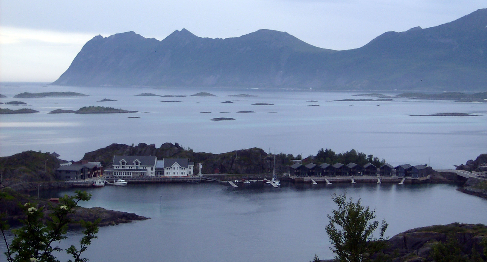
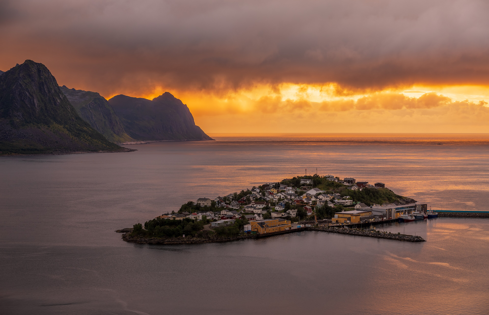
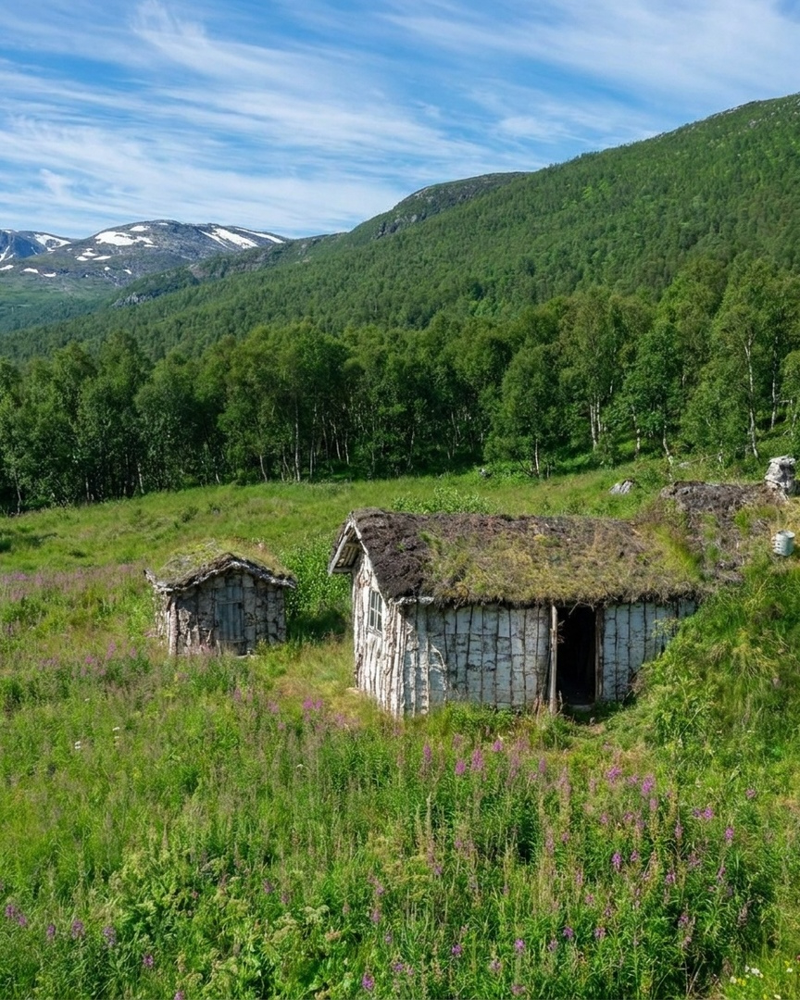
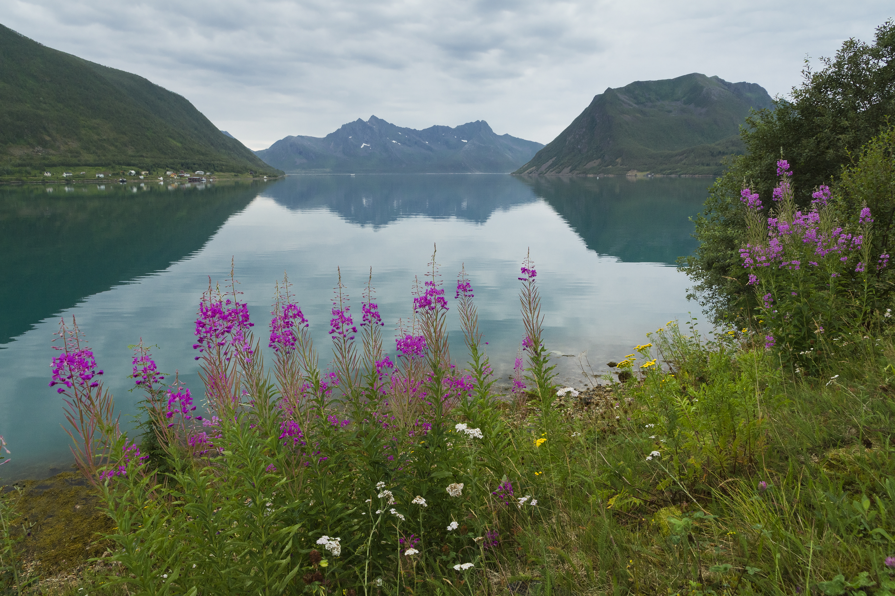
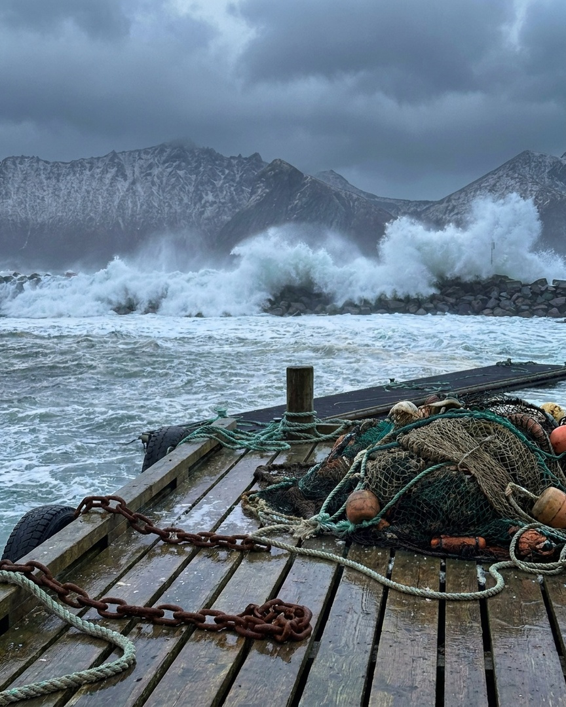
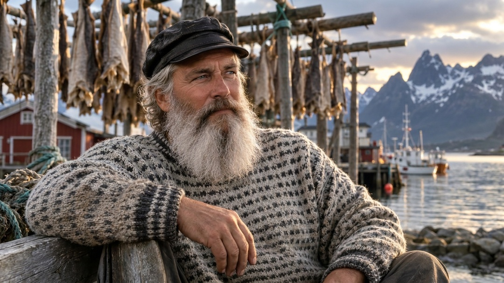

NORD-NORGE · NORGE
Senja
SENJA · HISTORIE
—
NORGE · NORD-NORGE
Senja
Klikk et punkt for å se hva det er — eller zoom selv med musehjul/fingre
SENJA
Olai
«Vi går dit folk kjører forbi»
FORESLÅTTE TEMAER
GUIDEOlai
💬 Klikk et tema for å utforske — eller spør Olai direkte